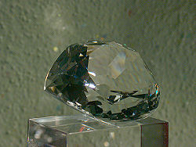

Cullinan Mine
Premier Diamond Mine
Useful Information
| Location: |
Cullinan, 50km east of Pretoria.
(S 25° 40.393, E 028° 31.026) |
| Open: |
All year Mon-Fri 10:30, 14, Sat, Sun, Hol 10:30. Booking required. [2007] |
| Fee: |
Adults ZAR 38, Children (10-18) ZAR , Children (0-9) not allowed. Groups (+): Adults ZAR , Children (3-18) ZAR . [2007] |
| Classification: |
 Diamond Mine Diamond Mine
|
| Light: | electric. |
| Dimension: | Ar=40ha, D=500m. |
| Guided tours: |
Surface Tour: D=2h. Underground Tour: D=3h. |
| Photography: | |
| Accessibility: | |
| Bibliography: | Gardner F. Williams (1905): The Diamons Mines of South Africa, B.F. Buck & Company, New York, p 344ff. |
| Address: | Premier Diamond Mine, 95 Oak Ave., Cullinan, Tel: +27-845-804802, Fax: +27-866-342002. |
| As far as we know this information was accurate when it was published (see years in brackets), but may have changed since then. Please check rates and details directly with the companies in question if you need more recent info. |
|
History
| 1888 | first diamonds discovered in this area. |
| 1902 | Premier (Transvaal) Diamond Company registered by Sir Thomas Cullinan. |
| 1903 | mine opened under the name Premier Mine. |
| 25-JUN-1905 | Cullinan Diamond discovered by Frederick Wells. |
| 1914 | production interrupted by World War I. |
| 1916 | reopened. |
| 1932 | mine stopped production. |
| 1945 | reopened, start of underground mining. |
| NOV-2003 | renamed Cullinan Diamond Mine. |
| 2007 | sold by De Beers to Rio Tinto. |
Geology
This is a classical Kimberlite pipe. The pipe is 1,180Ma old, the 75m thick gabbro sill which cuts through at 350m below the surface is 1,115Ma old. The Cullinan kimberlite is the most important pipe of twelve Group I kimberlite pipes in South Africa. It is also the largest diamondiferous kimberlite in South Africa with a cross-sectional area of 32ha. The vertical diatreme 550m deep and there the root zone starts. It is planned to mine about 1,000m deep, which would mean mining until 2030.
The diatreme is of complex structure and was formed three distinct phases, each producing a different facies of kimberlite. The first phase produced the diatreme filled with brownish tuffisitic kimberlite breccia (TKB). The second phase reactivated the diatreme and created a center of grey TKB, which contains Waterberg quartzite, basement granite and gneiss inclusions. The third phase is an intrusiion into the western part of the pipe. This is black hypabyssal facies kimberlite. Later the diatreme was intruded by carbonatite dykes.
Description
|  |
| Image: The Great Star of Africa. Replica at the Edelsteinmuseum Idar-Oberstein. |
The Cullinan Mine is located at the village Cullinan, and of course, the famous Cullinan diamond has been discovered here. All three are named after Sir Thomas Cullinan, who discovered a rich kimberlite pipe here in 1902. The Cullinan Diamond is the largest diamond in the world at 3,106 carats (621.2 g). It was discovered by Frederick Wells, surface manager of the Premier Diamond Mining Company. The gem was bought by the Transvaal government and presented to King Edward VII.
The diamond was cut into pieces when it was cut, resulting in eleven large gem-quality stones and a number of smaller fragments. The biggest polished gem is the Great Star of Africa (530.2 carats/106.04g). It was the largest polished diamond in the world until the 1985 discovery of the Golden Jubilee diamond.
Cullinan Mine is a giant open pit mine, it has four times the area of the big hole in Kimberly. The mine is still working and produces 25% of the world's gem-quality diamonds. There are both surface and underground tours for the public. The tour includes the high security premises of De Beers, where replica's of some of the world's most famous stones are shown. There is an exhibition of mine replicas and mining machinery. A 12 minute video tells about the history and geology of the mine. The mine security check is made to make sure nobody takes home a piece of diamond. In the logic of DeBeers, they are the owner. However, this is the security check which is made with anybody leaving the mine, no matter if its a miner, a tourist, or the management.
The mine tour may be completed by a visit to the McHardy House Mini Museum at Cullinan Square in Cullinan Diamond Mine Village. William McHardy was the first general manager of the Premier Mine. It shows how he lived, with the original furniture, and historic photographs of the mine and the town.
- See also
 Search Google for "Cullinan Mine"
Search Google for "Cullinan Mine" Google Earth Placemark
Google Earth Placemark Premier Mine - Wikipedia
Premier Mine - Wikipedia- Cullinan, Gauteng - Wikipedia
- Cullinan Diamond - Wikipedia
 De Beers Group - cullinan,
official website.
De Beers Group - cullinan,
official website.- Diamond Mines: The Essential Combination
- De Beers Group - geology of cullinan mine
- Pilot Guides.com: The Star of Africa: Cullinan Mine Diamonds
- Underground tours of Cullinan Mine
- Cullinan Diamond Mine